2022 Higher Computing Science marking instructions
Source: Scottish Qualifications Authority (SQA) / Qualifications Scotland. This is a StemInteract HTML companion, not an official HTML edition. Selectable text is supplied alongside original page images. Use the images or original PDF for equations, powers, fractions, vector notation, tables and diagrams; text extraction cannot fully preserve mathematical layout.
Jump to a question
PDF page 1
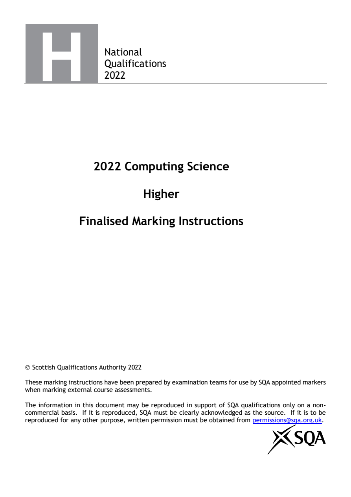
Selectable page text
National
Qualifications
2022
2022 Computing Science
Higher
Finalised Marking Instructions
© Scottish Qualifications Authority 2022
These marking instructions have been prepared by examination teams for use by SQA appointed markers
when marking external course assessments.
The information in this document may be reproduced in support of SQA qualifications only on a non-
commercial basis. If it is reproduced, SQA must be clearly acknowledged as the source. If it is to be
reproduced for any other purpose, written permission must be obtained from permissions@sqa.org.uk.PDF page 2
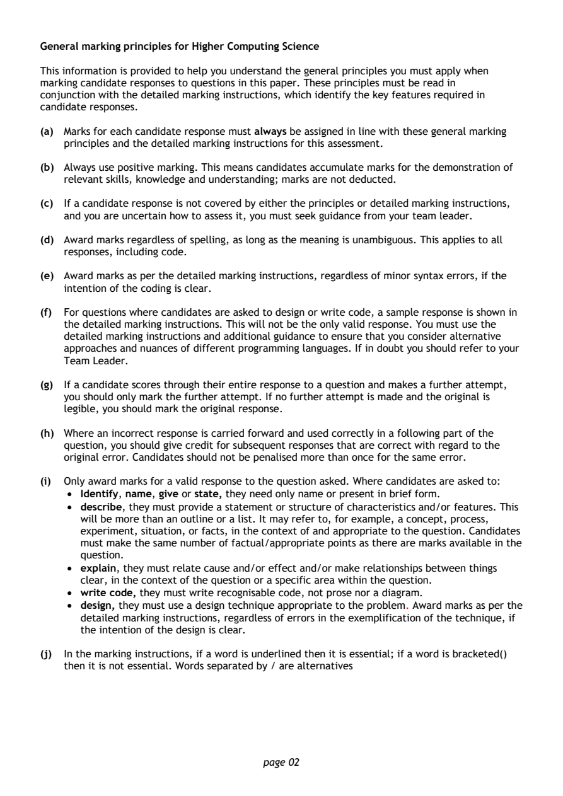
Selectable page text
General marking principles for Higher Computing Science
This information is provided to help you understand the general principles you must apply when
marking candidate responses to questions in this paper. These principles must be read in
conjunction with the detailed marking instructions, which identify the key features required in
candidate responses.
(a) Marks for each candidate response must always be assigned in line with these general marking
principles and the detailed marking instructions for this assessment.
(b) Always use positive marking. This means candidates accumulate marks for the demonstration of
relevant skills, knowledge and understanding; marks are not deducted.
(c) If a candidate response is not covered by either the principles or detailed marking instructions,
and you are uncertain how to assess it, you must seek guidance from your team leader.
(d) Award marks regardless of spelling, as long as the meaning is unambiguous. This applies to all
responses, including code.
(e) Award marks as per the detailed marking instructions, regardless of minor syntax errors, if the
intention of the coding is clear.
(f) For questions where candidates are asked to design or write code, a sample response is shown in
the detailed marking instructions. This will not be the only valid response. You must use the
detailed marking instructions and additional guidance to ensure that you consider alternative
approaches and nuances of different programming languages. If in doubt you should refer to your
Team Leader.
(g) If a candidate scores through their entire response to a question and makes a further attempt,
you should only mark the further attempt. If no further attempt is made and the original is
legible, you should mark the original response.
(h) Where an incorrect response is carried forward and used correctly in a following part of the
question, you should give credit for subsequent responses that are correct with regard to the
original error. Candidates should not be penalised more than once for the same error.
(i) Only award marks for a valid response to the question asked. Where candidates are asked to:
• Identify, name, give or state, they need only name or present in brief form.
• describe, they must provide a statement or structure of characteristics and/or features. This
will be more than an outline or a list. It may refer to, for example, a concept, process,
experiment, situation, or facts, in the context of and appropriate to the question. Candidates
must make the same number of factual/appropriate points as there are marks available in the
question.
• explain, they must relate cause and/or effect and/or make relationships between things
clear, in the context of the question or a specific area within the question.
• write code, they must write recognisable code, not prose nor a diagram.
• design, they must use a design technique appropriate to the problem. Award marks as per the
detailed marking instructions, regardless of errors in the exemplification of the technique, if
the intention of the design is clear.
(j) In the marking instructions, if a word is underlined then it is essential; if a word is bracketed()
then it is not essential. Words separated by / are alternatives
page 02PDF page 3
Question 1Question 2Question 3Question 4Question 5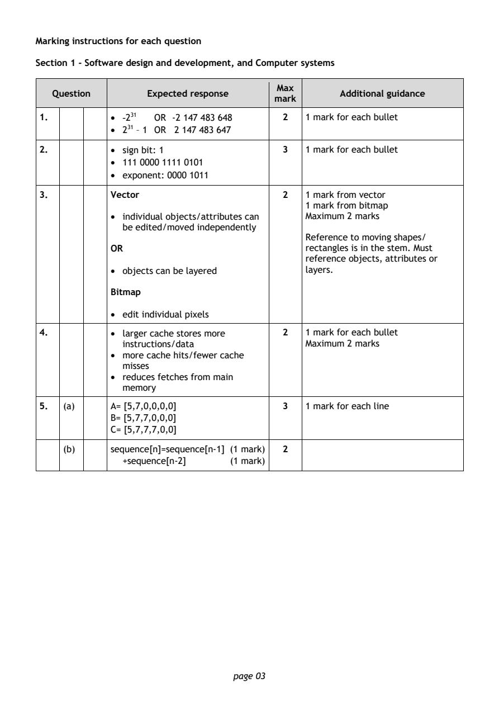
Selectable page text
Marking instructions for each question
Section 1 - Software design and development, and Computer systems
Max
Question Expected response Additional guidance
mark
1. • -231 OR -2 147 483 648 2 1 mark for each bullet
• 231 – 1 OR 2 147 483 647
2. • sign bit: 1 3 1 mark for each bullet
• 111 0000 1111 0101
• exponent: 0000 1011
3. Vector 2 1 mark from vector
1 mark from bitmap
• individual objects/attributes can Maximum 2 marks
be edited/moved independently
Reference to moving shapes/
OR rectangles is in the stem. Must
reference objects, attributes or
• objects can be layered layers.
Bitmap
• edit individual pixels
4. • larger cache stores more 2 1 mark for each bullet
instructions/data Maximum 2 marks
• more cache hits/fewer cache
misses
• reduces fetches from main
memory
5. (a) A= [5,7,0,0,0,0] 3 1 mark for each line
B= [5,7,7,0,0,0]
C= [5,7,7,7,0,0]
(b) sequence[n]=sequence[n-1] (1 mark) 2
+sequence[n-2] (1 mark)
page 03PDF page 4
Question 6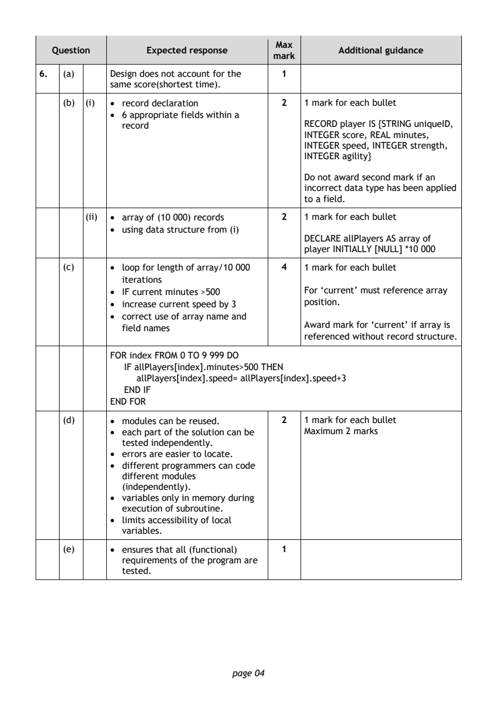
Selectable page text
Max
Question Expected response Additional guidance
mark
6. (a) Design does not account for the 1
same score(shortest time).
(b) (i) • record declaration 2 1 mark for each bullet
• 6 appropriate fields within a
record RECORD player IS {STRING uniqueID,
INTEGER score, REAL minutes,
INTEGER speed, INTEGER strength,
INTEGER agility}
Do not award second mark if an
incorrect data type has been applied
to a field.
(ii) • array of (10 000) records 2 1 mark for each bullet
• using data structure from (i)
DECLARE allPlayers AS array of
player INITIALLY [NULL] *10 000
(c) • loop for length of array/10 000 4 1 mark for each bullet
iterations
• IF current minutes >500 For ‘current’ must reference array
• increase current speed by 3 position.
• correct use of array name and
Award mark for ‘current’ if array is
field names
referenced without record structure.
FOR index FROM 0 TO 9 999 DO
IF allPlayers[index].minutes>500 THEN
allPlayers[index].speed= allPlayers[index].speed+3
END IF
END FOR
(d) • modules can be reused. 2 1 mark for each bullet
• each part of the solution can be Maximum 2 marks
tested independently.
• errors are easier to locate.
• different programmers can code
different modules
(independently).
• variables only in memory during
execution of subroutine.
• limits accessibility of local
variables.
(e) • ensures that all (functional) 1
requirements of the program are
tested.
page 04PDF page 5
Question 7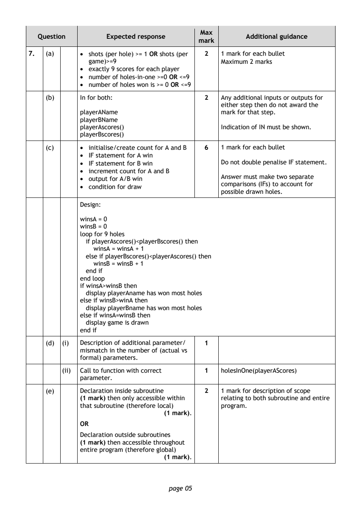
Selectable page text
Max
Question Expected response Additional guidance
mark
7. (a) • shots (per hole) >= 1 OR shots (per 2 1 mark for each bullet
game)>=9 Maximum 2 marks
• exactly 9 scores for each player
• number of holes-in-one >=0 OR <=9
• number of holes won is >= 0 OR <=9
(b) In for both: 2 Any additional inputs or outputs for
either step then do not award the
playerAName mark for that step.
playerBName
playerAscores() Indication of IN must be shown.
playerBscores()
(c) • initialise/create count for A and B 6 1 mark for each bullet
• IF statement for A win
• IF statement for B win Do not double penalise IF statement.
• increment count for A and B
Answer must make two separate
• output for A/B win
comparisons (IFs) to account for
• condition for draw
possible drawn holes.
Design:
winsA = 0
winsB = 0
loop for 9 holes
if playerAscores()<playerBscores() then
winsA = winsA + 1
else if playerBscores()<playerAscores() then
winsB = winsB + 1
end if
end loop
if winsA>winsB then
display playerAname has won most holes
else if winsB>winA then
display playerBname has won most holes
else if winsA=winsB then
display game is drawn
end if
(d) (i) Description of additional parameter/ 1
mismatch in the number of (actual vs
formal) parameters.
(ii) Call to function with correct 1 holesInOne(playerAScores)
parameter.
(e) Declaration inside subroutine 2 1 mark for description of scope
(1 mark) then only accessible within relating to both subroutine and entire
that subroutine (therefore local) program.
(1 mark).
OR
Declaration outside subroutines
(1 mark) then accessible throughout
entire program (therefore global)
(1 mark).
page 05PDF page 6
Question 8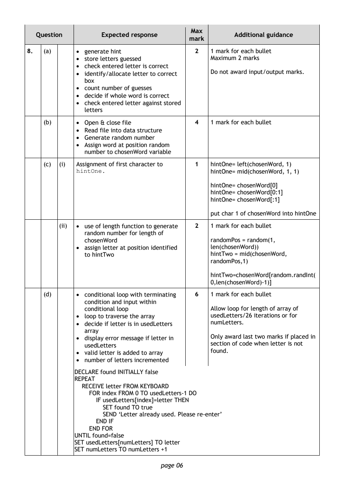
Selectable page text
Max
Question Expected response Additional guidance
mark
8. (a) • generate hint 2 1 mark for each bullet
• store letters guessed Maximum 2 marks
• check entered letter is correct
• identify/allocate letter to correct Do not award input/output marks.
box
• count number of guesses
• decide if whole word is correct
• check entered letter against stored
letters
(b) • Open & close file 4 1 mark for each bullet
• Read file into data structure
• Generate random number
• Assign word at position random
number to chosenWord variable
(c) (i) Assignment of first character to 1 hintOne= left(chosenWord, 1)
hintOne. hintOne= mid(chosenWord, 1, 1)
hintOne= chosenWord[0]
hintOne= chosenWord[0:1]
hintOne= chosenWord[:1]
put char 1 of chosenWord into hintOne
(ii) • use of length function to generate 2 1 mark for each bullet
random number for length of
chosenWord randomPos = random(1,
• assign letter at position identified len(chosenWord))
to hintTwo hintTwo = mid(chosenWord,
randomPos,1)
hintTwo=chosenWord[random.randInt(
0,len(chosenWord)-1)]
(d) • conditional loop with terminating 6 1 mark for each bullet
condition and input within
conditional loop Allow loop for length of array of
• loop to traverse the array usedLetters/26 iterations or for
• decide if letter is in usedLetters numLetters.
array
• display error message if letter in Only award last two marks if placed in
usedLetters section of code when letter is not
• valid letter is added to array
f ound.
• number of letters incremented
DECLARE found INITIALLY false
REPEAT
RECEIVE letter FROM KEYBOARD
FOR index FROM 0 TO usedLetters-1 DO
IF usedLetters[index]=letter THEN
SET found TO true
SEND ‘Letter already used. Please re-enter’
END IF
END FOR
UNTIL found=false
SET usedLetters[numLetters] TO letter
SET numLetters TO numLetters +1
page 06PDF page 7
Question 9Question 10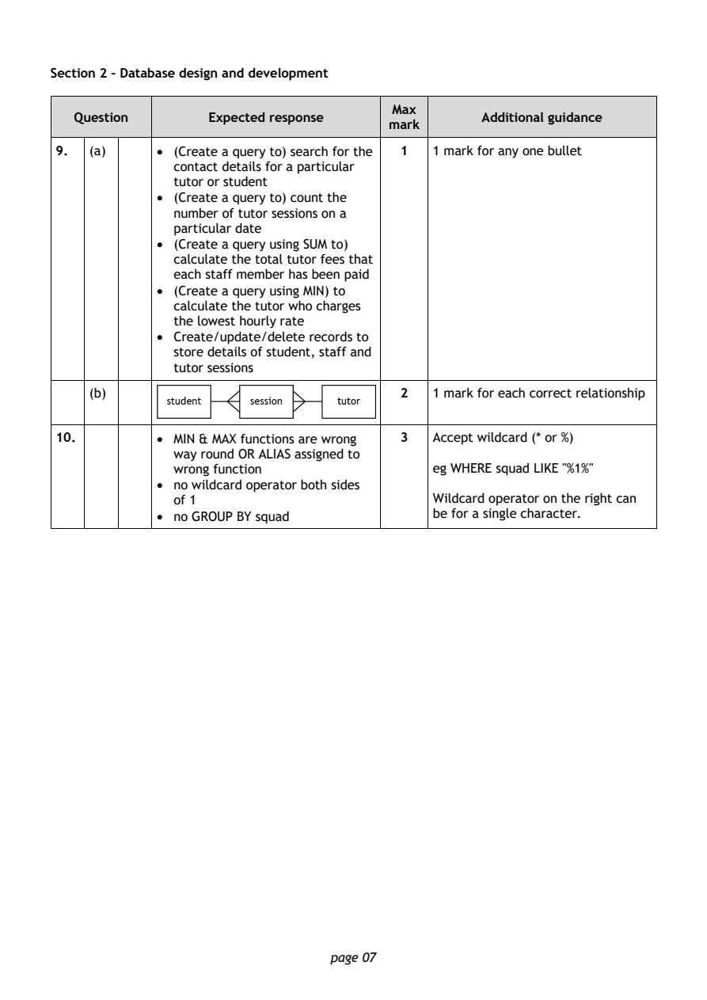
Selectable page text
Section 2 – Database design and development
Max
Question Expected response Additional guidance
mark
9. (a) • (Create a query to) search for the 1 1 mark for any one bullet
contact details for a particular
tutor or student
• (Create a query to) count the
number of tutor sessions on a
particular date
• (Create a query using SUM to)
calculate the total tutor fees that
each staff member has been paid
• (Create a query using MIN) to
calculate the tutor who charges
the lowest hourly rate
• Create/update/delete records to
store details of student, staff and
tutor sessions
(b) 2 1 mark for each correct relationship
10. • MIN & MAX functions are wrong 3 Accept wildcard (* or %)
way round OR ALIAS assigned to
wrong function eg WHERE squad LIKE "%1%"
• no wildcard operator both sides
of 1 Wildcard operator on the right can
• no GROUP BY squad be for a single character.
page 07PDF page 8
Question 11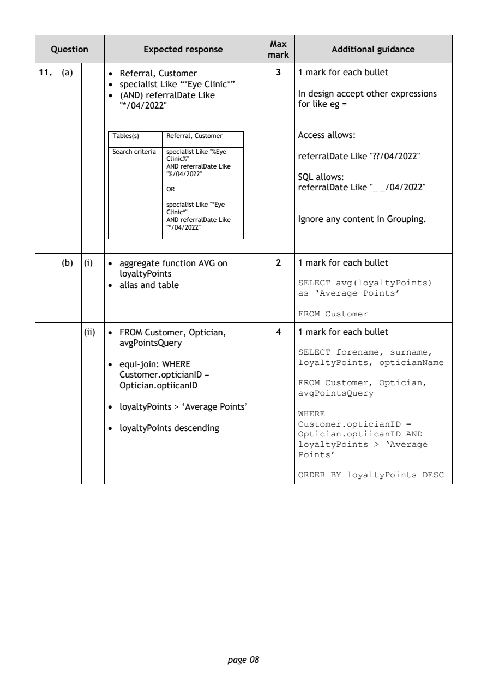
Selectable page text
Max
Question Expected response Additional guidance
mark
11. (a) • Referral, Customer 3 1 mark for each bullet
• specialist Like “*Eye Clinic*”
• (AND) referralDate Like In design accept other expressions
"*/04/2022" for like eg =
Tables(s) Referral, Customer Access allows:
Search criteria specialist Like "%Eye
referralDate Like "??/04/2022"
Clinic%"
AND referralDate Like
"%/04/2022" SQL allows:
referralDate Like "_ _/04/2022"
OR
specialist Like "*Eye
Clinic*"
AND referralDate Like Ignore any content in Grouping.
"*/04/2022"
(b) (i) • aggregate function AVG on 2 1 mark for each bullet
loyaltyPoints
• alias and table SELECT avg(loyaltyPoints)
as ‘Average Points’
FROM Customer
(ii) • FROM Customer, Optician, 4 1 mark for each bullet
avgPointsQuery
SELECT forename, surname,
loyaltyPoints, opticianName
• equi-join: WHERE
Customer.opticianID =
FROM Customer, Optician,
Optician.optiicanID
avgPointsQuery
• loyaltyPoints > ‘Average Points’
WHERE
Customer.opticianID =
• loyaltyPoints descending
Optician.optiicanID AND
loyaltyPoints > ‘Average
Points’
ORDER BY loyaltyPoints DESC
page 08PDF page 9
Question 12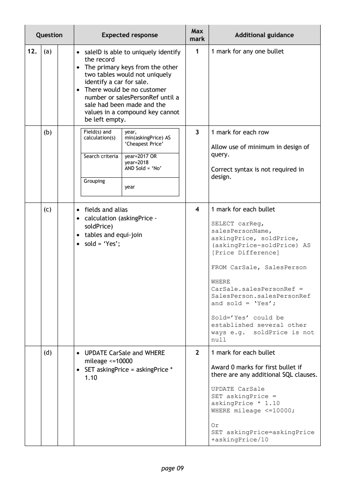
Selectable page text
Max
Question Expected response Additional guidance
mark
12. (a) • saleID is able to uniquely identify 1 1 mark for any one bullet
the record
• The primary keys from the other
two tables would not uniquely
identify a car for sale.
• There would be no customer
number or salesPersonRef until a
sale had been made and the
values in a compound key cannot
be left empty.
(b) Field(s) and year, 3 1 mark for each row
calculation(s) min(askingPrice) AS
‘Cheapest Price’
Allow use of minimum in design of
query.
Search criteria year=2017 OR
year=2018
AND Sold = ‘No’ Correct syntax is not required in
design.
Grouping
year
(c) • fields and alias 4 1 mark for each bullet
• calculation (askingPrice -
SELECT carReg,
soldPrice)
salesPersonName,
• tables and equi-join
askingPrice, soldPrice,
• sold = ‘Yes’; (askingPrice-soldPrice) AS
[Price Difference]
FROM CarSale, SalesPerson
WHERE
CarSale.salesPersonRef =
SalesPerson.salesPersonRef
and sold = ‘Yes’;
Sold=’Yes’ could be
established several other
ways e.g. soldPrice is not
null
(d) • UPDATE CarSale and WHERE 2 1 mark for each bullet
mileage <=10000
Award 0 marks for first bullet if
• SET askingPrice = askingPrice *
there are any additional SQL clauses.
1.10
UPDATE CarSale
SET askingPrice =
askingPrice * 1.10
WHERE mileage <=10000;
Or
SET askingPrice=askingPrice
+askingPrice/10
page 09PDF page 10
Question 13Question 14Question 15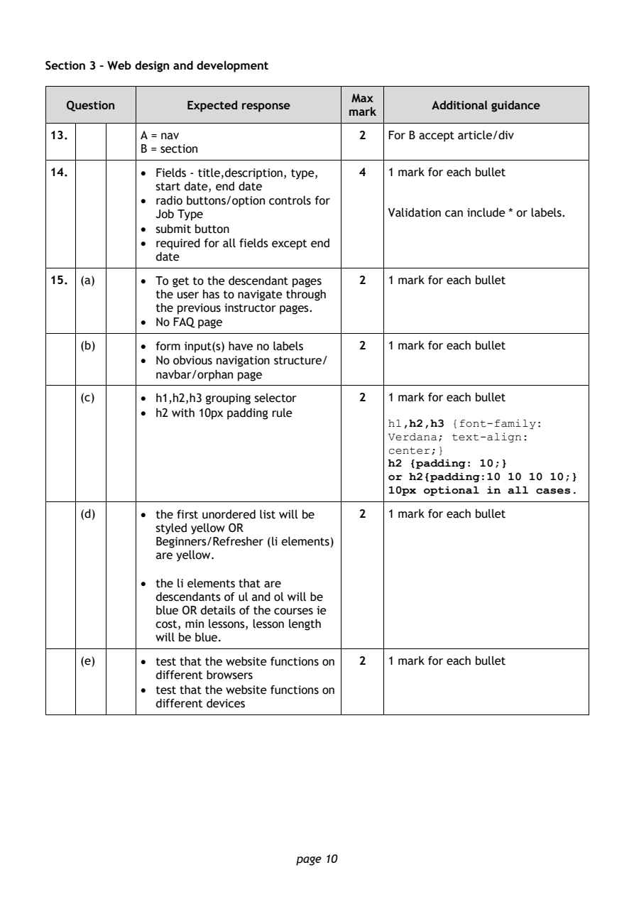
Selectable page text
Section 3 – Web design and development
Max
Question Expected response Additional guidance
mark
13. A = nav 2 For B accept article/div
B = section
14. • Fields - title,description, type, 4 1 mark for each bullet
start date, end date
• radio buttons/option controls for
Job Type Validation can include * or labels.
• submit button
• required for all fields except end
date
15. (a) • To get to the descendant pages 2 1 mark for each bullet
the user has to navigate through
the previous instructor pages.
• No FAQ page
(b) • form input(s) have no labels 2 1 mark for each bullet
• No obvious navigation structure/
navbar/orphan page
(c) • h1,h2,h3 grouping selector 2 1 mark for each bullet
• h2 with 10px padding rule
h1,h2,h3 {font-family:
Verdana; text-align:
center;}
h2 {padding: 10;}
or h2{padding:10 10 10 10;}
10px optional in all cases.
(d) • the first unordered list will be 2 1 mark for each bullet
styled yellow OR
Beginners/Refresher (li elements)
are yellow.
• the li elements that are
descendants of ul and ol will be
blue OR details of the courses ie
cost, min lessons, lesson length
will be blue.
(e) • test that the website functions on 2 1 mark for each bullet
different browsers
• test that the website functions on
different devices
page 10PDF page 11
Question 16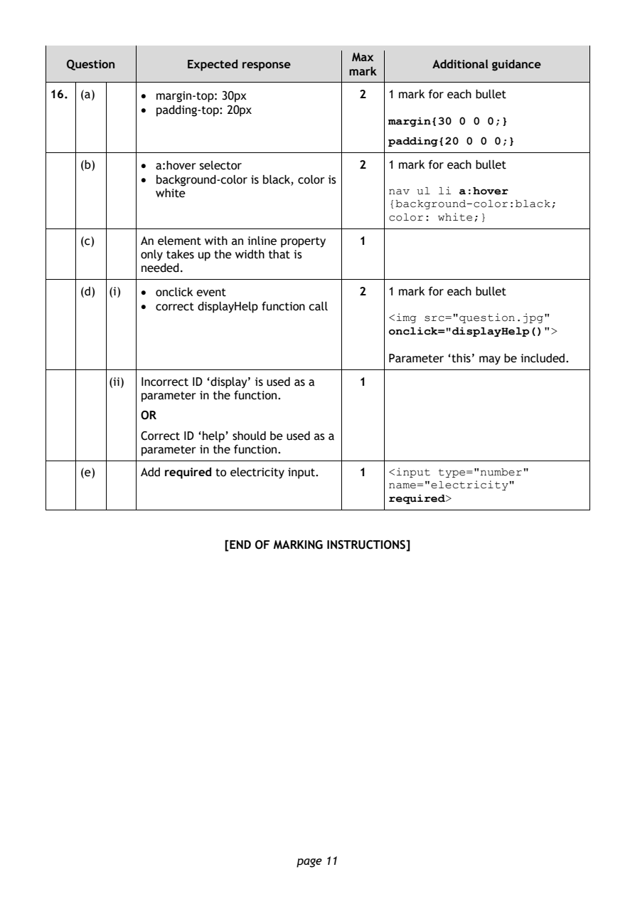
Selectable page text
Max
Question Expected response Additional guidance
mark
16. (a) • margin-top: 30px 2 1 mark for each bullet
• padding-top: 20px
margin{30 0 0 0;}
padding{20 0 0 0;}
(b) • a:hover selector 2 1 mark for each bullet
• background-color is black, color is
white nav ul li a:hover
{background-color:black;
color: white;}
(c) An element with an inline property 1
only takes up the width that is
needed.
(d) (i) • onclick event 2 1 mark for each bullet
• correct displayHelp function call
<img src="question.jpg"
onclick="displayHelp()">
Parameter ‘this’ may be included.
(ii) Incorrect ID ‘display’ is used as a 1
parameter in the function.
OR
Correct ID ‘help’ should be used as a
parameter in the function.
(e) Add required to electricity input. 1 <input type="number"
name="electricity"
required>
[END OF MARKING INSTRUCTIONS]
page 11